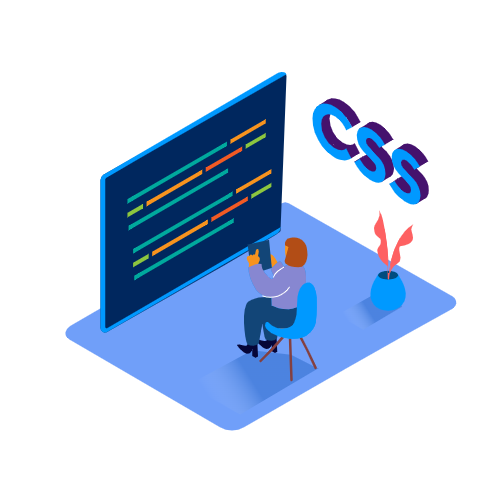

Hello
I'm
Muhammad Bayu Kurniawan
I graduated from SMK Negeri 3 Jepara majoring in Computer and Network Engineering in June 2022. Web Development, Computer Networking, Graphic Design, and Other Technology (Related Topics) are very interesting to me
Hello
I graduated from SMK Negeri 3 Jepara majoring in Computer and Network Engineering in June 2022. Web Development, Computer Networking, Graphic Design, and Other Technology (Related Topics) are very interesting to me

Create a logo as your corporate and brand identity using design software.
View PortfolioThe entry-level MikroTik certification program for Network Engineers. This certification improves or adds value to the Network Engineer by assisting them in comprehending the fundamentals of networking.
DownloadJunior Network Administrator certification program offered by BNSP. Junior Network Administrators can better comprehend the fundamentals of computer network administration with the aid of this certification.
DownloadIT Network Support Internship Certification Program for vocational students. This credential serves as confirmation that I successfully completed a three-month internship at PT Sarana Insan Muda Selaras as IT network support.
DownloadDicoding online class program for entry-level FrontEnd Web Developers. This certification improves or add to FrontEnd Web knowledge in developing a website.
Download